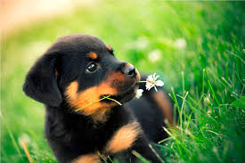

Muhammad Zubair
front-end ninja
Feautured Work

Appify
https://github.com/udacity/Appify
Sunflower
https://github.com/udacity/sunflower
Bokeh
https://github.com/udacity/bokeh
https://github.com/udacity/Appify
https://github.com/udacity/sunflower
https://github.com/udacity/bokeh